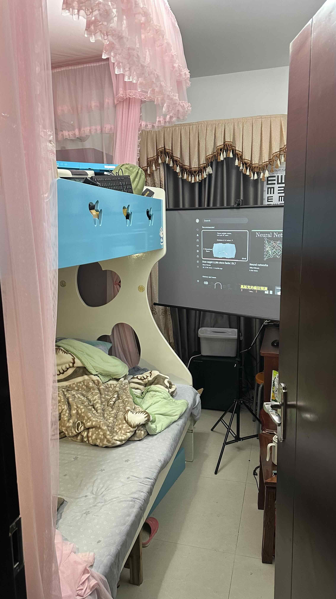

Schlafzimmer | Original, von KI übersetzt
Blick von der Haustür
 Quelle: Eigenaufnahme
- Möbel: Ein Etagenbett mit blauem Rahmen.
- Elektronik: Ein Fernseher oder Monitor auf einem Ständer.
- Textilien: Ein Vorhang im Hintergrund.
- Zubehör: Ein Stativ oder Ständer neben dem Monitor.
- Sitzgelegenheit: Ein kleiner Hocker oder Stuhl unter dem Monitor.
- Architektur: Eine Tür auf der rechten Seite.
Bett
 Quelle: Eigenaufnahme
Quelle: Eigenaufnahme
- Möbel: Ein Bett mit einem Laptop darauf.
- Aufbewahrung: Ein Bücherregal voller Bücher.
- Beleuchtung: Eine kleine Lampe, die am Bücherregal befestigt ist.
- Bettwäsche: Ein Kissen und einige Decken auf dem Bett.
- Gegenstände: Ein paar verstreute Gegenstände auf dem Bett.
Schreibtisch
 Quelle: Eigenaufnahme
Quelle: Eigenaufnahme
- Bereich: Ein unordentlicher Bereich mit mehreren Kartons.
- Elektronik: Ein Computergehäuse auf dem Boden.
- Kabel: Verschiedene Kabel und Drähte.
- Netzwerk: Ein Router oder Modem.
- Textilien: Eine pinke Decke oder ein Tuch auf der linken Seite.
Bücher
 Quelle: Eigenaufnahme
Quelle: Eigenaufnahme
- Bücher: Eine Sammlung von Büchern, hauptsächlich chinesische Titel, mit einigen englischen Titeln wie “Peak”, “Sapiens”, “The Wind-Up Bird Chronicle”, “Ray Dolby” und “Coco Chanel”, sowie Programmier-, Literatur-, Biografie- und möglicherweise technische Bücher.
- Sonstiges: Eine pinke Aufbewahrungsbox, ein Hefter, eine kleine pinke beschriftete Box, eine Stofftasche und kleine Gegenstände (möglicherweise Schreibwaren) im rechten Fach.
Unordnung
 Quelle: Eigenaufnahme
Quelle: Eigenaufnahme
- Elektronische Geräte: Ein Wi-Fi-Router mit mehreren Antennen, ein schwarzes elektronisches Gerät (möglicherweise ein Modem) und blaue und weiße Ethernet-Kabel.
- Kartons: Mehrere Kartons unterschiedlicher Größe, ein Karton mit elektronischen Komponenten und ein Karton mit einem sichtbaren, aber undeutlichen Etikett.
- Verschiedene Gegenstände: Ein pinkes Tuch oder Handtuch, ein weißer Kunststoff-Organizer mit Fächern und verschiedene kleine Gegenstände (möglicherweise Werkzeuge und andere Objekte).
- Verpackungsmaterialien: Luftpolsterfolie und Plastiktüten sowie Gegenstände, die sich noch in ihrer Originalverpackung befinden.